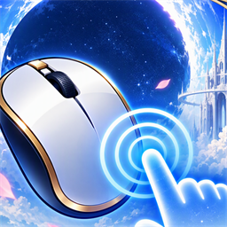

Mouse Touch
Use your mouse in games and apps that only understand touch.
Some Android games and apps ignore mouse clicks and only react to a finger on the screen. That's a problem when you play on Samsung DeX, an external monitor, or a tablet with a mouse. Mouse Touch turns your mouse into a finger.
How it works
- Left-click = tap, exactly where the cursor is
- Click and drag = swipe or drag, following the mouse live
- Right-click = Back
- Works on the phone or tablet screen, an external monitor, Samsung DeX and screen mirroring; it follows the cursor to whichever screen it's on
- Pause it with one tap (in the app or the Quick Settings tile) and the mouse works normally again
Privacy first
- No data collected, stored or shared
- No internet access, no ads, no analytics, no tracking
- Does not read your screen or what you type
Mouse Touch uses Android's Accessibility Service API only to receive mouse input and perform touch gestures for you. The app explains this and asks for your consent before it can be turned on. Details are in the privacy policy.
Requirements
Android 14 or newer and a USB or Bluetooth mouse.